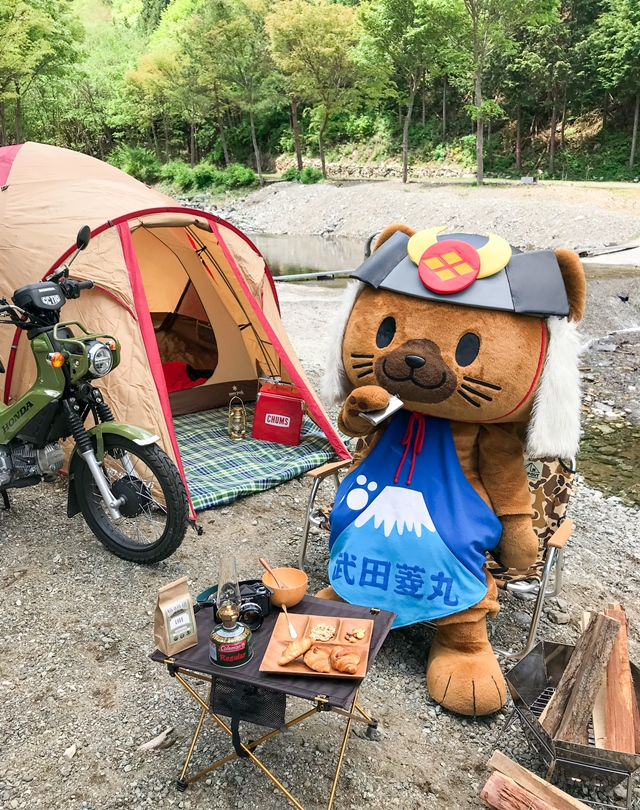

武田菱丸／富士の国やまなし観光ネット 山梨県公式観光情報
本文の保存版（2026-11-22）
出典URL：https://www.yamanashi-kankou.jp/kankou/event/takeda-hishimaru.html
本文へスキップします。
富士の国やまなし Home of Fujisan,yamanashi
山梨をもっと好きになるWebマガジン
旅行会社・団体の皆様へ
- ハローキティ
- language
- メニュー
ここから本文です。
「富士の国やまなし観光キャラバン隊長」武田菱丸
プロフィール
- 名前：武田 菱丸（たけだ ひしまる）
- 性別：男のぼこ（男の子）
- 性格：勇敢で頭脳明晰。従順でみんなに優しく、がまん強い。でも、ちょっぴり淋しがりや
- 宝物：武田菱の兜、富士山の腹掛け、いつも持ってる風林火山の軍配
- 趣味：信玄公祭りを盛り上げること
- 好物：陣中ほうとう、甲州とりもつ煮
- 好きなことば：皆のもの～ 出陣じゃ～！
- チャームポイント：黒目がちな つぶらな瞳
武田菱丸
山梨の魅力をPRするため、全国各地に出陣しています。
＼ 武田菱丸の活動日記 ／
仲間と一緒
仲間と一緒に観光キャンペーンに出陣
バスケットボールに挑戦
バスケットボールに挑戦！
桃
山梨の桃を味わってマル
ひし丸サンタ
ひし丸サンタ

山梨でキャンプを楽しむマル
電車内のひし丸
電車に乗ってGO！
出陣情報は「武田菱丸 X」で発信してるマル。ぜひチェックして応援してマル！
- 武田菱丸 公式Xへ（外部リンク）
武田菱丸のイラストの使用について
山梨のPRに武田菱丸のイラストをご活用いただけます。
詳しい使用条件や申請方法については、以下のリンク先をご確認ください。
- 武田菱丸のイラストについて
ホーム > 武田菱丸
ページの先頭へ戻る
- サイトマップ
- このサイトについて
- 観光についての問い合わせ先
- 公益社団法人やまなし観光推進機構とは
- 山梨県庁ホームページ
- 関連リンク
富士の国やまなし
公益社団法人やまなし観光推進機構
© Yamanashi Tourism Organization All rights reserved.
地図で使用する画像
- 武田菱丸の画像
https://www.yamanashi-kankou.jp/kankou/event/images/hishimaru_log05.jpg